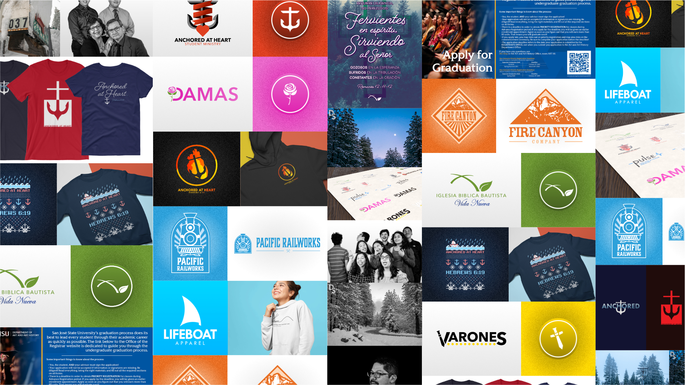

I am a digital media artist who specializes in graphic design, especially in logo and brand design. My goal is to create consistent and attractive designs that represent the organization I work for in the best light. This involves a knowledge of color, typography, and calculated simplicity, all of which I hope to express through my work.
I have worked as a graphic designer roughly since 2014 through volunteering at my church, Iglesia Biblica Bautista Vida Nueva. There, and in other places, I have been able to practice and refine my art to serve real purposes and to creatively tackle projects as they are introduced to me. I work flexibly, and consistently, and nothing short of perfect is good enough, especially when there are more eyes on my work than ever.
When I create my digital art, I do so with extreme care and precision. In my designs, I aim for a contemporary, smooth, and accessible product that fits my client's or supervisor's needs. And in everything I do, I go above and beyond the work I have been assigned or the job description I was handed. I believe design exists to creatively solve problems, and graphic design is no different.
My aim is to create design that is distraction-free, yet delivers a perfect first-impression of the organization. Logos are the first thing many people see when they look for goods or services from a company. So my job is to lead a person to have the best first impression of an organization without detracting from the products or services they deliver.
I am a leader in Iglesia Biblica Bautista Vida Nueva, a local church in Castro Valley, CA. There I serve God by using my talents in the best way I know how, and I have become a leader there in the church. You can visit the church website by going to www.ibbvn.org.
 My role as youth leader in my church's youth group is to stimulate spiritual growth among the teens and to help them form closer relationships with each other as well as with God. On occasion, I hold the studies in the youth group, but mainly my role is to facilitate the games and lead the youth in following the plans for the activities planned that day or evening.
My role as youth leader in my church's youth group is to stimulate spiritual growth among the teens and to help them form closer relationships with each other as well as with God. On occasion, I hold the studies in the youth group, but mainly my role is to facilitate the games and lead the youth in following the plans for the activities planned that day or evening.
Besides working directly with our teens, I use my experience in art and design to create a sort of “brand” for the Anchored at Heart group. This mostly consists of a concise design language for presentations, font choices, announcement slides, and most importantly merchandise. Every year, the youth group has a new shirt for the teens and/or their families. However, in 2018, I decided to make not one, but three designs for the group, which can be seen in the Portfolio page, all with various products to sport the designs. All of the merchandise is non-profit, so while the supplier makes their profit, I do not want to earn money from the designs. That way, the teens and their families will be able to more easily afford the designs. I intend to keep the train rolling with these projects to help contribute to the success of the youth group.
In addition, I serve to fill the technological roles of the youth group. Every meeting we have, we start off with songs of worship to encourage the teens to find joy in praise, and that means we need something to read off of for every song. I help out with the simple action of changing the slides but also I create the slides. The slides are made to be easy to read as well as visually appealing. The slides also have the guitar chords right on the lyrics, so that way our teen guitarist can more comfortably follow along as she learns. And at the same time, our lead guitarist (the pastor of the church) can play the song
It is a huge joy to work closely with these teens and I look forward to every youth activity and event I am able to attend.
As the leader of the technology ministry in the church, my responsibility is to show up early to set up the live-streaming equipment and the service computer. We broadcast each of our services for members who are unable to attend regular services as well as anyone who happens to stumble upon our channel, Vida Nueva Media.
The service computer is used to display the hymns we will be singing each service, the announcements on events coming up soon, and any presentations the speaker will be presenting, like missionary presentations and sermons. My team and I are responsible for the functionality of the computer and the smooth flow of the service.